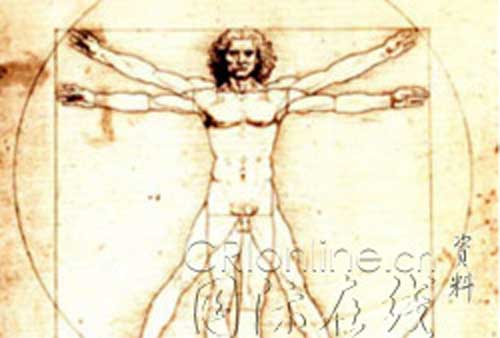

市场经济，总是有很多争先恐后的买卖，任何可买卖的买卖，都毫无例外被争先恐后地特殊行业化。因此“就算卖字也不能太特殊行业了！”这样的句子确实有点不近市场经济的情理。但当这句子前加上“贾平凹、陈忠实”后，即使没理可理，也有情可情了。
虽说五四以来的白话文都是典型的垃圾文字，但贾平凹、陈忠实在其间，无论如何也算一号人物。而在圈子里，无论是否垃圾，只要曾圈子般历史地人物了，也就自然会被历史而人物。因此至少在写上世纪的白话文史时，贾平凹、陈忠实也会被历史一下的。然而，所谓百尺竿头还需进步，贾平凹、陈忠实已历史的历史，难道已经百尺竿头？至于那未被历史的历史究竟如何，显然不是很圈子、很特殊行业地卖几个字就可以回答的。
当然，如今连标点符号都可以很人民币化地买卖，本无必要为任何人的买卖而多费口舌。但无论是谁，既然已经很特殊行业地卖了，无论如何，至少也要专业一点。这，即使是对特殊行业的消费者，也是一个很不特殊的要求了。贾平凹、陈忠实最近为球而卖的文字，显然连这特殊行业的消费者很不特殊的要求都达不到。可叹这俩老男人器官般干瘪的文字可笑地涂抹着无数商业算计下的所谓时髦，可怜那球怎么这样不球地也球了？
由此不禁要提议，世界杯亢奋后的媒体，还是要好好去特殊行业中特殊行业地合计几个美男作家。至少下届世界杯时，即使只能继续看器官般丑陋的文字，但只要是美男器官倾泻出来的文字，也总是可以很特殊行业地消费的。人民币老男干瘪的文字和思想，还不如人民币美男燥热的姿态和身体，这大概就是从贾平凹、陈忠实等世界杯文字中唯一值得结论的结论。
中国科学界怎么一夜间酸气弥漫？